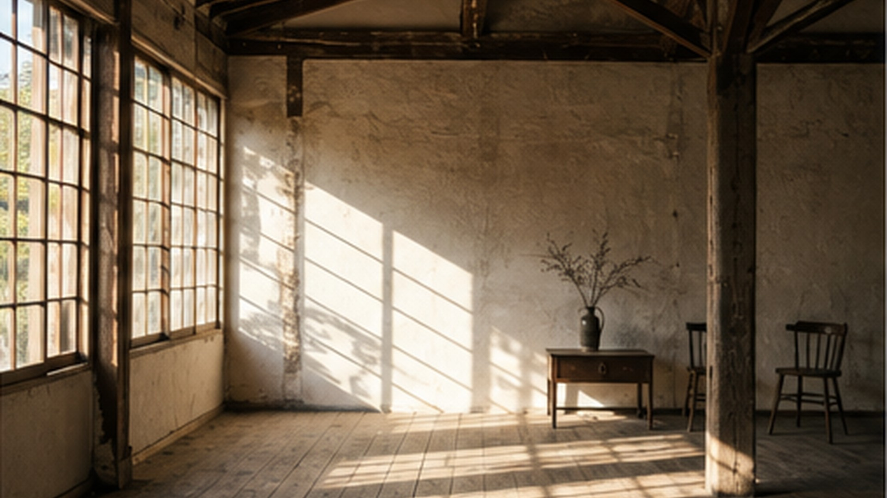
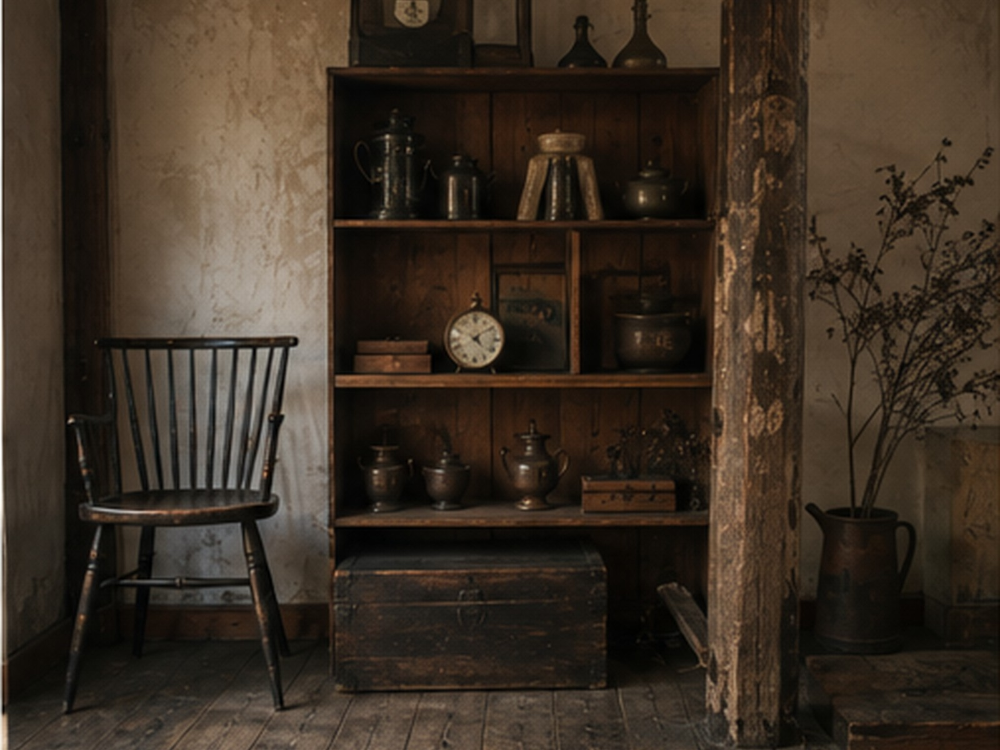
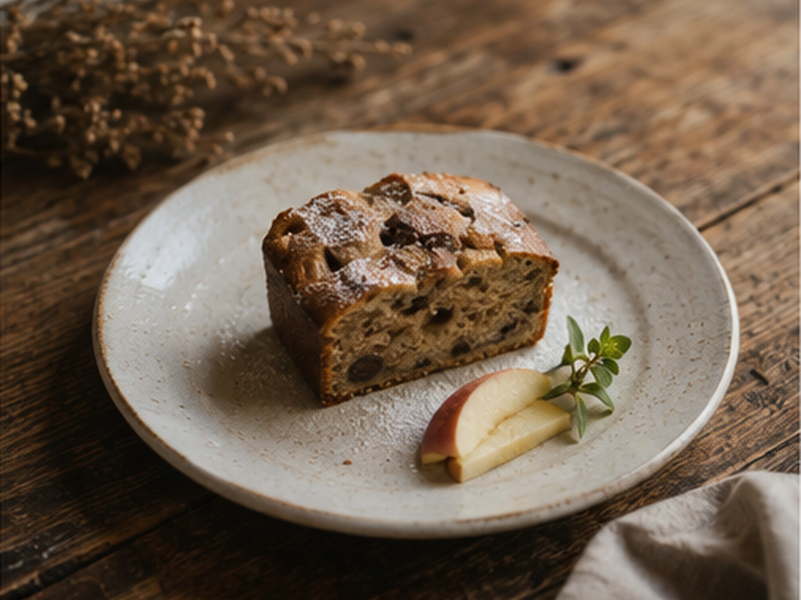
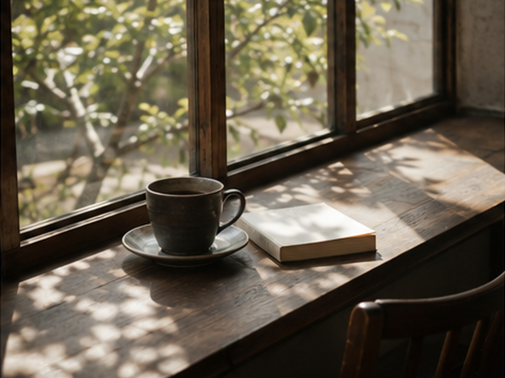

印刷工場だった建物の中に
古い印刷工場を生まれ変わらせた川反中央ビルの中にあります。建物そのものに時間の積み重ねがあります。
お客様にとっての価値：新しく作られた内装では出せない、落ち着いた空気の中で過ごせます。

Cafe Epice
秋田市・川反
古い印刷工場をリノベーションした建物の中にあるカフェです。古材やアンティークに囲まれた静かな空間で、手作りのお菓子とコーヒーの時間を過ごせます。
※ 本ページは店舗運営者様へのご提案用に作成したもので、公式サイトではありません。
※ 掲載している写真はすべてイメージ画像です。
CONCEPT
Cafe Epice が大切にしているのは、手作りのお菓子とコーヒーだけではありません。ホッとできる時間や居場所そのものを届けること。古材とアンティークが生む静かな空気が、その時間を支えています。
STRENGTH
いただいた店舗情報から整理した、Cafe Epice の魅力を支える3つの要素です。

古い印刷工場を生まれ変わらせた川反中央ビルの中にあります。建物そのものに時間の積み重ねがあります。
お客様にとっての価値：新しく作られた内装では出せない、落ち着いた空気の中で過ごせます。
古材やアンティークを生かした設えで、静かに過ごせる空間づくりを大切にしています。
お客様にとっての価値：会話も読書も、自分のペースで過ごせる時間になります。
商品を提供するだけでなく、ホッとできる時間や居場所そのものを届けることを大切にしています。
お客様にとっての価値：用がなくても立ち寄れる、日常の逃げ場のような場所になります。
STORY
Cafe Epice を営むのは高坂千代子さん。前身となる石田珈琲店で働いた経験を持ち、そこで培ったものを土台に、自分の店を持つなら地元・秋田で、と考えて開業しました。
選んだのは、古い印刷工場をリノベーションした建物の一角。新しく整えるのではなく、すでにあるものの時間を生かす場所です。その考え方は、古材やアンティークを生かした店内の設えにもつながっています。
現在もお菓子作りから接客まで、自身の手で続けています。だからこそ、その日その日のお菓子に作り手の判断がそのまま表れます。
PICK UP

季節ごとに内容が変わる、店主の手作りのお菓子です。その時期に扱える素材に合わせて作られるため、同じ月でも並ぶものが変わります。
こんな場面に：ひとりで気持ちを落ち着けたいとき／気の置けない相手とゆっくり話したいとき／季節の変わり目に、その時期らしいものを食べたいとき。
HOW TO SPEND
空間そのものを楽しんでもらうための店づくりがされています。

古材とアンティークに囲まれた店内で、コーヒーとお菓子とともに自分の時間を持てます。
向いている方：ひと息つきたい方、静かな場所を探している方。
賑やかさより落ち着きを大切にした空間なので、話の中身に集中できます。
向いている方：じっくり話したい相手と訪れる方。
店内での撮影には制限があります。写真を撮ることより、その場の時間を楽しんでもらうための配慮です。
お客様にとっての価値：他のお客様の時間も守られ、静けさが保たれます。
その日のお菓子と売り切れ状況を来店前に確認でき、取り置きやテイクアウトを事前にお願いできる仕組みの提案です。まずは、お客様がどの使い方に近いかを案内する部分を、実際に操作できる試作として用意しました。
本機能は店舗運営者向けの試作デモです。
現在提供中の正式サービスではありません。
入力内容の保存・送信は行いません。
INFORMATION
住所・電話番号・営業時間・定休日は、確認できた公式の案内がないため掲載していません。最新情報は店舗の公式案内をご確認ください。